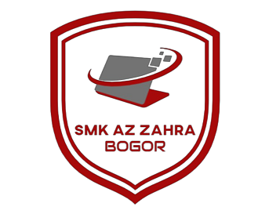
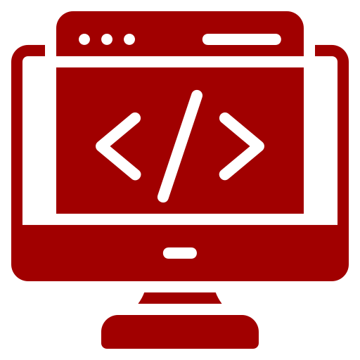

- 
- SIJA
- TKJ
- RPL
- MULTIMEDIA
SMK AZ ZAHRA merupakan Sekolah Menengah Kejuruan yang berfokus di bidang IT. SMK AZ ZAHRA beralamat
di Jalan Raya Bogor Kota Bogor Provinsi Jawa Barat.
SMK AZ ZAHRA berdiri sejak tahun 2019 dan selalu mengalami perkembangan, adapun kompetensi keahlian
yang tersedia di SMK AZ ZAHRA yaitu: Sistem Informasi dan Jaringan Aplikasi ( SIJA ), Teknik
Komputer dan Jaringan ( TKJ ), Rekaya Perangkat Lunak ( RPL ) dan Multimedia ( MM ).
VISI
Menghasilkan Lulusan Unggul Berkualitas Internasional yang berlandaskan Iman dan Taqwa.
MISI
1. Menyelenggarakan pendidikan yang terintegrasi dengan pengamalan ajaran agama yang dianut.
2. Mencetak Generasi Berprestasi.
3. Menyelenggarakan pembelajaran kejuruan berbasis Teaching Factory yang berbudaya lingkungan,
inovatif, kreatif, dan kompetitif.
4. Menjadi sekolah yang modern dan berkarakter.
Kompetensi Keahlian
SIJA
Sistem Informatika Jaringan dan Aplikasi
SIJA (Sistem Informatika Jaringan & Aplikasi) adalah jurusan yang bergerak dibidang teknologi
seperti komputer,jaringan dan membuat sebuah aplikasi. Jurusan ini sangat mendukung kemajuan
revolusi industri 4.0 yang artinya jurusan yang akan sangat mendukung kemajuan yang penuh dengan
teknologi dan sangat dicari-cari di setiap perusahaan besar di masa depan nanti. Tidak hanya
bisa menguasai tentang komputer,jaringan dan aplikasi, di jurusan SIJA juga bisa menjadi seorang
web developer seperti web development atau membuat web desain dan lain-lain.
TKJ
Teknik Komputer dan Jaringan
TKJ (Teknik Komputer dan Jaringan) adalah ilmu berbasis Teknologi Informasi dan Komunikasi
terkait kemampuan algoritma, dan pemrograman komputer, perakitan komputer, perakitan jaringan
komputer, dan pengoperasian perangkat lunak, dan internet. Teknik komputer, dan jaringan juga
membutuhkan pemahaman di bidang teknik listrik, dan ilmu komputer sehingga mampu mengembangkan,
dan mengintegrasikan perangkat lunak, dan perangkat keras.
RPL
Rekayasa Perangkat Lunak
RPL (Rekayasa Perangkat Lunak) adalah sebuah jurusan yang mempelajari dan mendalami semua
cara-cara pengembangan perangkat lunak termasuk pembuatan, pemeliharaan, manajemen organisasi
pengembangan perangkat lunak dan manajemen kualitas. Bukan hanya itu, RPL juga berkaitan dengan
software komputer mulai dari pembuatan website, aplikasi, game dan semua yang berkaitan dengan
pemrograman dengan menguasai bahasa pemrograman tersebut.
MM
Multimedia
MM (Multimedia) adalah suatu jurusan SMK di bidang komputer yang mempelajari tentang penggunaan
komputer guna untuk menyajikan data teks, suara, gambar, animasi, serta video yang dibuat
semenarik mungkin dengan tools-tools yang sudah tersedia seperti halnya Adobe Photoshop,
CorelDraw, Freehand, Adobe After Efect, dan lain-lain.
CONTACT INFO
Address
Jl. Raya Bogor, Bogor, Jawa Barat